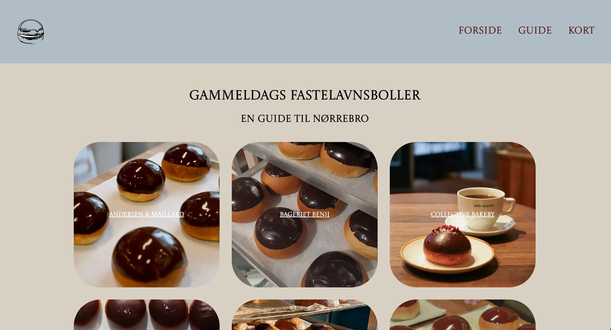
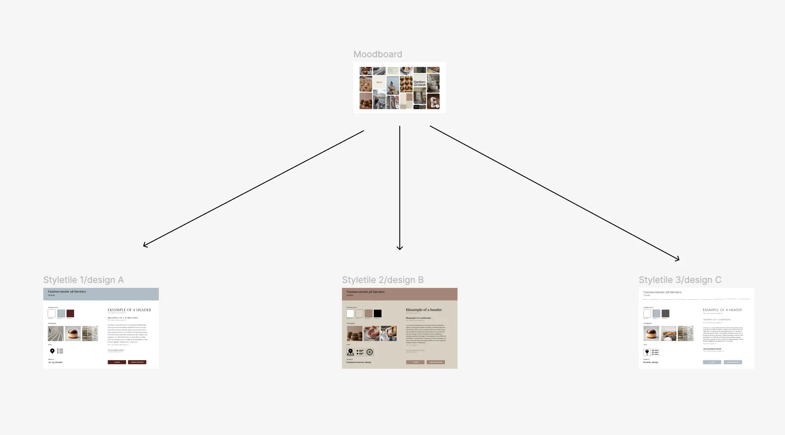
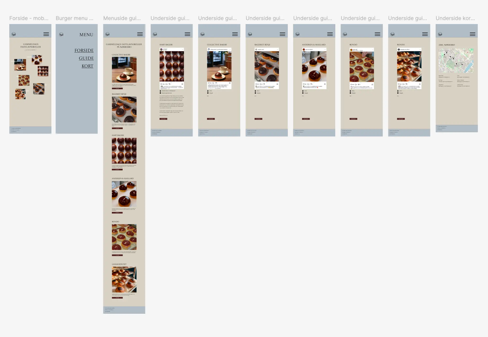

GRUNDLÆGGENDE UX/UI
LÆRING, PROCES & LØSNING
LÆRING ~ Tema 3 - Grundlæggende UX/UI gav mig forståelse for hele processen bag og udarbejdelse af brugergrænseflader herunder research, udvikling, test og præsentation.
PROCES ~ På dette tema var opgaven at producere et website med valgfrit emne med alt hvad det indebærer at planlægning, research, designidéer, brugertests, kode samt præsentation af færdig løsning og proces. Jeg valgte at udarbejde et website med formålet at brugeren nemt og overskueligt kunne danne sig overblik over diverse gammeldags fastelavnsboller på Nørrebro i København.
Efter brainstorm og moodboards, designidéer og styletiles, var jeg klar til at arbejde videre med wireframes og prototyper. Herfra testede jeg min klikbare prototype i Figma gennem tænke-højt-tests, hvilket gav mig indsigter i, hvilke ændringer jeg skulle foretage til mine endelige layoutdiagrammer og kode. Til slut på temaet præcenterede jeg mit færdige site samt hele min proces for en underviser og to af mine medstuderende.
LØSNING ~ Mit færdige site kan tilgåes her.
PROCESDOKUMENTATION FIGMA
Herunder kan et udpluk af mine Figmafiler ses. Det første billede viser hvordan mit moodboard la til grund for mine tre forskellige udkast til styletile. Det sidste billede viser min færdige klikbare mobilprototype.
Mit Figmaboard med alt min procesdokumentation kan tilgåes her.
 